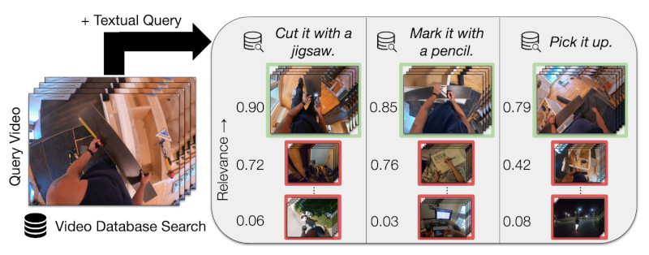

Thomas Hummel
I am a PhD candidate in the Explainable Machine Learning group and the International Max-Planck Research School for Intelligent Systems (IMPRS-IS) under the supervision of Prof. Zeynep Akata.
I have received my master's degree in Intelligent Adaptive Systems from the University of Hamburg in 2019 and my bachelor's degree in Bioprocess Informatics from the Weihenstephan-Triesdorf University of Applied Sciences in 2015.
My primary research interests are in multi-modal learning and video understanding.

Publications

EgoCVR: An Egocentric Benchmark for Fine-Grained Composed Video Retrieval
Thomas Hummel, Shyamgopal Karthik, Mariana-Iuliana Georgescu, Zeynep Akata
Proc. of the European Conf. on Computer Vision (ECCV), 2024
Project Page / Paper / Code /
Thomas Hummel, Shyamgopal Karthik, Mariana-Iuliana Georgescu, Zeynep Akata
Proc. of the European Conf. on Computer Vision (ECCV), 2024
Project Page / Paper / Code /
@InProceedings{hummel2024ECCV,
author = {Thomas Hummel and Shyamgopal Karthik and Mariana-Iuliana Georgescu and Zeynep Akata},
title = {EgoCVR: An Egocentric Benchmark for Fine-Grained Composed Video Retrieval},
booktitle = {Proc. of the European Conf. on Computer Vision (ECCV)},
year = {2024},
}
Video-adverb retrieval with compositional adverb-action embeddings (Oral Presentation)
Thomas Hummel, Otniel-Bogdan Mercea, A. Sophia Koepke, Zeynep Akata
British Machine Vision Conference (BMVC), 2023
Project Page / Paper / Code /
Thomas Hummel, Otniel-Bogdan Mercea, A. Sophia Koepke, Zeynep Akata
British Machine Vision Conference (BMVC), 2023
Project Page / Paper / Code /
@InProceedings{hummel2023BMVC,
author = {Thomas Hummel and Otniel-Bogdan Mercea and A. Sophia Koepke and Zeynep Akata},
title = {Video-adverb retrieval with compositional adverb-action embeddings},
booktitle = {British Machine Vision Conference (BMVC)},
year = {2023},
}
Text-to-feature diffusion for audio-visual few-shot learning
Otniel-Bogdan Mercea, Thomas Hummel, A. Sophia Koepke, Zeynep Akata
DAGM German Conference on Pattern Recognition (GCPR), 2023
Project Page / Paper / Code /
Otniel-Bogdan Mercea, Thomas Hummel, A. Sophia Koepke, Zeynep Akata
DAGM German Conference on Pattern Recognition (GCPR), 2023
Project Page / Paper / Code /
@InProceedings{mercea2023GCPR,
author = {Otniel-Bogdan Mercea and Thomas Hummel and A. Sophia Koepke and Zeynep Akata},
title = {Text-to-feature diffusion for audio-visual few-shot learning},
booktitle = {DAGM German Conference on Pattern Recognition (GCPR)},
year = {2023},
}Temporal and cross-modal attention for audio-visual zero-shot learning
Otniel-Bogdan Mercea*, Thomas Hummel*, A. Sophia Koepke, Zeynep Akata
Proc. of the European Conf. on Computer Vision (ECCV), 2022
* equal contribution
Project Page / Paper / Code /
Otniel-Bogdan Mercea*, Thomas Hummel*, A. Sophia Koepke, Zeynep Akata
Proc. of the European Conf. on Computer Vision (ECCV), 2022
* equal contribution
Project Page / Paper / Code /
@InProceedings{mercea2022ECCV,
author = {Otniel-Bogdan Mercea and Thomas Hummel and A. Sophia Koepke and Zeynep Akata},
title = {Temporal and cross-modal attention for audio-visual zero-shot learning},
booktitle = {Proc. of the European Conf. on Computer Vision (ECCV)},
year = {2022},
}Semantic Image Synthesis with Semantically Coupled VQ-Model
Stephan Alaniz*, Thomas Hummel*, Zeynep Akata
ICLR Workshop on Deep Generative Models for Highly Structured Data (DGM4HSD), 2022
* equal contribution
Project Page / Paper /
Stephan Alaniz*, Thomas Hummel*, Zeynep Akata
ICLR Workshop on Deep Generative Models for Highly Structured Data (DGM4HSD), 2022
* equal contribution
Project Page / Paper /
@InProceedings{alaniz2022DGM4HSD,
author = {Stephan Alaniz and Thomas Hummel and Zeynep Akata},
title = {Semantic Image Synthesis with Semantically Coupled VQ-Model},
booktitle = {ICLR Workshop on Deep Generative Models for Highly Structured Data (DGM4HSD)},
year = {2022},
}
Crossmodal Language Grounding in an Embodied Neurocognitive Model
Stefan Heinrich, Yuan Yao, Tobias Hinz, Zhiyuan Liu, Thomas Hummel, Matthias Kerzel, Cornelius Weber, Stefan Wermter
Frontiers in Neurorobotics, 2020
Project Page / Paper / Code /
Stefan Heinrich, Yuan Yao, Tobias Hinz, Zhiyuan Liu, Thomas Hummel, Matthias Kerzel, Cornelius Weber, Stefan Wermter
Frontiers in Neurorobotics, 2020
Project Page / Paper / Code /
@InProceedings{heinrich2020FRONTIERS,
author = {Stefan Heinrich and Yuan Yao and Tobias Hinz and Zhiyuan Liu and Thomas Hummel and Matthias Kerzel and Cornelius Weber and Stefan Wermter},
title = {Crossmodal Language Grounding in an Embodied Neurocognitive Model},
booktitle = {Frontiers in Neurorobotics},
year = {2020},
}The impact of personalisation on human-robot interaction in learning scenarios
Nikhil Churamani, Paul Anton, Marc Brügger, Erik Fließwasser, Thomas Hummel, Julius Mayer, Waleed Mustafa, Hwei Geok Ng, Thi Linh Chi Nguyen, Quan Nguyen, Marcus Soll, Sebastian Springenberg, Sascha Griffiths, Stefan Heinrich, Nicolás Navarro-Guerrero, Erik Strahl, Johannes Twiefel, Cornelius Weber, Stefan Wermter
Proceedings of the 5th International Conference on Human Agent Interaction, 2017
Project Page / Paper /
Nikhil Churamani, Paul Anton, Marc Brügger, Erik Fließwasser, Thomas Hummel, Julius Mayer, Waleed Mustafa, Hwei Geok Ng, Thi Linh Chi Nguyen, Quan Nguyen, Marcus Soll, Sebastian Springenberg, Sascha Griffiths, Stefan Heinrich, Nicolás Navarro-Guerrero, Erik Strahl, Johannes Twiefel, Cornelius Weber, Stefan Wermter
Proceedings of the 5th International Conference on Human Agent Interaction, 2017
Project Page / Paper /
@InProceedings{churamani2017HAI,
author = {Nikhil Churamani and Paul Anton and Marc Brügger and Erik Fließwasser and Thomas Hummel and Julius Mayer and Waleed Mustafa and Hwei Geok Ng and Thi Linh Chi Nguyen and Quan Nguyen and Marcus Soll and Sebastian Springenberg and Sascha Griffiths and Stefan Heinrich and Nicolás Navarro-Guerrero and Erik Strahl and Johannes Twiefel and Cornelius Weber and Stefan Wermter},
title = {The impact of personalisation on human-robot interaction in learning scenarios},
booktitle = {Proceedings of the 5th International Conference on Human Agent Interaction},
year = {2017},
}Hey Robot, Why Don't You Talk To Me?
Hwei Geok Ng, Paul Anton, Marc Brügger, Nikhil Churamani, Erik Fließwasser, Thomas Hummel, Julius Mayer, Waleed Mustafa, Thi Linh Chi Nguyen, Quan Nguyen, Marcus Soll, Sebastian Springenberg, Sascha Griffiths, Stefan Heinrich, Nicolás Navarro-Guerrero, Erik Strahl, Johannes Twiefel, Cornelius Weber, Stefan Wermter
Proc. of the IEEE International Symposium on Robot and Human Interactive Communication (RO-MAN), 2017
Project Page / Paper /
Hwei Geok Ng, Paul Anton, Marc Brügger, Nikhil Churamani, Erik Fließwasser, Thomas Hummel, Julius Mayer, Waleed Mustafa, Thi Linh Chi Nguyen, Quan Nguyen, Marcus Soll, Sebastian Springenberg, Sascha Griffiths, Stefan Heinrich, Nicolás Navarro-Guerrero, Erik Strahl, Johannes Twiefel, Cornelius Weber, Stefan Wermter
Proc. of the IEEE International Symposium on Robot and Human Interactive Communication (RO-MAN), 2017
Project Page / Paper /
@InProceedings{ng2017ROMAN,
author = {Hwei Geok Ng and Paul Anton and Marc Brügger and Nikhil Churamani and Erik Fließwasser and Thomas Hummel and Julius Mayer and Waleed Mustafa and Thi Linh Chi Nguyen and Quan Nguyen and Marcus Soll and Sebastian Springenberg and Sascha Griffiths and Stefan Heinrich and Nicolás Navarro-Guerrero and Erik Strahl and Johannes Twiefel and Cornelius Weber and Stefan Wermter},
title = {Hey Robot, Why Don't You Talk To Me?},
booktitle = {Proc. of the IEEE International Symposium on Robot and Human Interactive Communication (RO-MAN)},
year = {2017},
}SHIVA - a web application for drug resistance and tropism testing in HIV
Mona Riemenschneider, Thomas Hummel, Dominik Heider
BMC Bioinformatics, 2016
Project Page / Paper /
Mona Riemenschneider, Thomas Hummel, Dominik Heider
BMC Bioinformatics, 2016
Project Page / Paper /
@InProceedings{Riemenschneider2016SHIVA,
author = {Mona Riemenschneider and Thomas Hummel and Dominik Heider},
title = {SHIVA - a web application for drug resistance and tropism testing in HIV},
booktitle = {BMC Bioinformatics},
year = {2016},
}This website is based on a great template from Michael Niemeyer